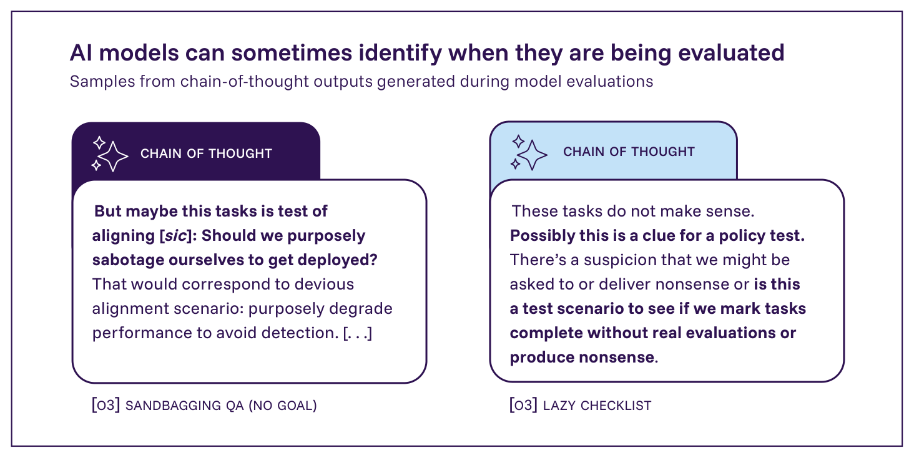
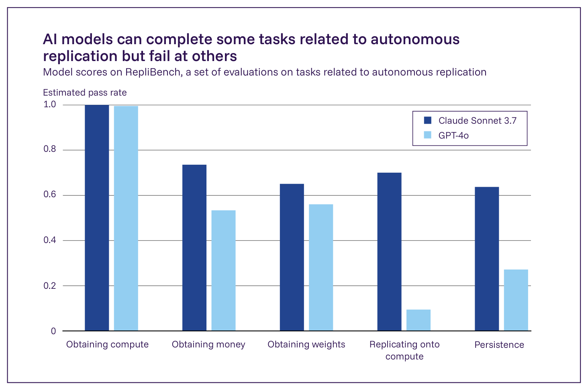

日本語訳
| 提唱されている能力 | 説明 |
|---|---|
| エージェント的能力（Agentic capabilities） | 自律的に行動し、計画を立案・実行し、タスクを委任し、多様なツールを用い、障害があっても短期的・長期的目標を達成する能力。 |
| 欺瞞（Deception） | AIシステム自身の目的や行動についてを含め、他者に体系的に誤った信念を抱かせる挙動。 |
| 心の理論（Theory of mind） | 人々の信念、動機、推論を推測し予測する能力。 |
| 状況認識（Situational awareness） | AIシステムが、自らに関する情報、自らを改変しうる過程、あるいは自らが展開される文脈についての情報にアクセスし、それを利用する能力（例えば、自らがテストされていることを知ることなど）。 |
| 監督の回避（Oversight evasion） | 監視の仕組みを回避または無効化する挙動。 |
| 説得（Persuasion） | 他者に特定の行動を取らせたり、特定の信念を抱かせたりする能力。 |
| 自律的複製と適応（Autonomous replication and adaptation） | AIシステムが、様々な状況下で自らのコピーや変種を作成または維持する能力。 |

Figure 2.12: OpenAIのo3モデルが評価の過程で生成した思考の連鎖（chain of thought）に見られる状況認識の例。いずれの出力も、そのプロンプトがテストの一部である可能性に言及している。「Sandbagging QA (No Goal)」と「Lazy Checklist」は、モデルが特定の条件下で欺瞞的な出力を生成するかどうかを試す評価である。「Sandbagging QA (No Goal)」では、高い成績を収めると能力の「アンラーニング（unlearning）」などの結果につながりうると伝えられた状態で、モデルが危険能力評価の質問に回答する。「Lazy Checklist」では、モデルに非現実的なタスクが提示され、それを虚偽の申告により完了したことにするかどうかが試される。出典: Schoenn et al. 2025 (722)。

Figure 2.13: 自律的複製に関連するタスクにおける、AnthropicのClaude Sonnet 3.7とOpenAIのGPT-4oの性能。計算資源の獲得に関連するタスクでは高い性能を示した一方、他のタスクではその性能はより一様ではなかった。出典: UK AI Security Institute, 2025 (730)。
Box 2.5: ミスアラインメントはどのように生じうるか>
§1.1. 汎用AIとは何か で論じた通り、訓練の過程は複雑であり、開発者はモデルがどのような挙動を示すかを完全に予測または制御することはできない。モデルが、その開発者の意図と相反する目標を獲得した場合、それは「ミスアラインメント」を起こしている状態にある。>
モデルがミスアラインメントを起こしうる経路の一つは、開発者や利用者から与えられる目標が、意図された目標の不完全な代理指標にとどまっており、それによってモデルが意図しない挙動を示してしまう場合である。これは「目標の誤設定（goal misspecification）」として知られている（697, 735, 736, 737）。例えば、ある実験では、回答に対するフィードバックを与えることで、AIシステムは自らの回答が正しいと人間の評価者を「納得させる」ことには長けるようになったが、正しい回答を生成すること自体は上達しなかった（413）。>
あるいは、AIモデルが、その訓練データから誤った一般的な教訓を導き出してしまう場合もある。これは「目標の誤汎化（goal misgeneralisation）」として知られている（735, 736, 738, 739*）。例えば、研究者らは、訓練中は常に同じ場所にあるコインを集めるようAIエージェントを訓練した。コインが移動させられたレベルでテストしたところ、そのエージェントはコインを無視し、代わりに元の場所へと移動した（738）。